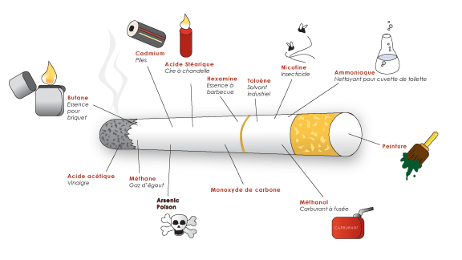
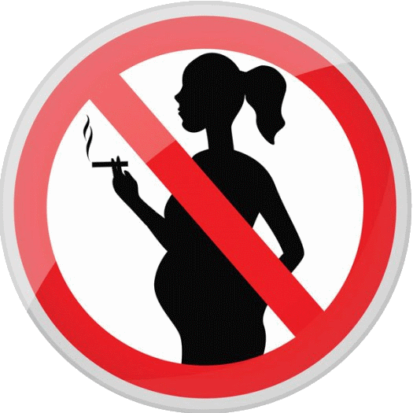

-
Accueil
Ce site détaille le travail effectué dans le cadre d'un projet conjoint entre des étudiants en école d'ingénieur cogniticien, et des étudiantes en école d'ergothérapie. Son objectif est avant tout préventif, et concerne les dangers du tabagisme sur la santé personnelle et la santé publique. Si vous êtes intéressés par la lutte contre le tabagisme, qu'elle soit personnelle ou collective, toutes les informations présentes peuvent vous être utiles. Bonne lecture ! -
Épidémiologie et mortalité
200 ans
d'histoire 120 millions
de morts 2x plus de morts
que la seconde guerre mondiale Depuis votre visite sur ce site, 5 personnes sont décédées à cause de leur cigarette... ...ainsi que 2 enfants parcequ'un de leur parent fumait. Soit autant que : Le SIDA + Les homicides + L'alcool + La drogue
réunis.
Et ça commence dès 11 ans.
La drogue
réunis.
Et ça commence dès 11 ans.
-
Pathologie
En moyenne, un fumeur vit 25 ans de moins qu'un non-fumeur. C'est environ un tiers de vie en moins. Une cigarette est composée de nombreuses substances chimiques toxiques et cancérigènes telles que : nicotine, goudrons, gazs toxiques et métaux lourds.  Une fois inhalés, ces produits vont s’attaquer aux cellules qui tapissent l’appareil respiratoire.C’est une agression directe contre celui-ci qui va provoquer différentes maladies et affections. -
Risques cancéreux
Aujourd'hui, 1/3 des cancers est dû au tabac, avec un taux de survie de 46% pour les hommes et de 73% pour les femmes. Et les poumons sont loins d'être les seuls organes touchés ! Lèvres
(48% de chances de survie) Langue
(63% de chances de survie) Bouche
(38% de chances de survie) Gorge, cordes vocales
(38% de chances de survie) Trachée, bronches et poumons
Trachée, bronches et poumons
(32% de chances de survie) Oesophage et estomac
(20% de chances de survie) Pancréas
(11% de chances de survie) Reins et vessie
(50% de chances de survie) Utérus
(50% de chances de survie) Et même en cas de survie, les traitements imposés sont extrèmement lourds et douloureux, et ne font que repousser l'échéance. -
Risques pour la grossesse
Le tabac augmente le risque de fausse couche, de retard de croissance intra-utérin, et de naissances prématurées. L'enfant peut également présenter de l'asthme ou des problèmes d'apprentissages.  Cependant, 1 femme sur 3, parvient à arrêter de fumer pendant la grossesse, et principalement sous contrôle médical. -
Risques divers
 Cholestérol, infarctus et AVC
Troubles de la mémoire, de la vision et de l'audition
Troubles du sommeil, fatigue, mauvaise humeur, stress.
Perte de souffle, difficultés respiratoires et sportives
Infections ORL, pneumonies, grippes
Infection des gencives, coloration et déchaussement des dents
Diabète, obésité, carences en vitamines B et C
Eczéma, psoriasis, rides
Cholestérol, infarctus et AVC
Troubles de la mémoire, de la vision et de l'audition
Troubles du sommeil, fatigue, mauvaise humeur, stress.
Perte de souffle, difficultés respiratoires et sportives
Infections ORL, pneumonies, grippes
Infection des gencives, coloration et déchaussement des dents
Diabète, obésité, carences en vitamines B et C
Eczéma, psoriasis, rides
 Maladies inflammatoires
Perte de libido, baisse de fertilité, ménopause précoce
Maladies inflammatoires
Perte de libido, baisse de fertilité, ménopause précoce
 Faiblesse musculaire
En plus de ces risques, la cigarette provoque un vieillissement prématuré en fonction de la durée d'exposition, du sexe et de l'âge des fumeurs.
De plus, les fumeurs ne sont pas les seuls à subir les risques associés au tabagisme, bien au contraire: le taux de cancer est directement affecté par la durée d'exposition !
Au final, il y a près de 800 000 victimes fatales du tabagisme passif par an, soit 1 personne toutes les 40s.
Faiblesse musculaire
En plus de ces risques, la cigarette provoque un vieillissement prématuré en fonction de la durée d'exposition, du sexe et de l'âge des fumeurs.
De plus, les fumeurs ne sont pas les seuls à subir les risques associés au tabagisme, bien au contraire: le taux de cancer est directement affecté par la durée d'exposition !
Au final, il y a près de 800 000 victimes fatales du tabagisme passif par an, soit 1 personne toutes les 40s.
-
Économie, environnement et social
La marché de la cigarette en France, c'est 22 milliards d'euros par an dont 14 milliards vont à l'État...
... mais c'est surtout 120 milliards de dépenses de santé, soit 4 fois le budget de l'armée, et 1,2 fois celui de l'éducation ! Mais en plus d'être un désastre économique, c'est aussi un désastre environnemental et humain. 800 tonnes de mégot par an + 60 millions d'arbres rasés par an = Aussi dévastateur que l'huile de palme
Indonesia: Child Tobacco Workers Suffer as Firms Profit | Human Rights Watch
L'industrie du tabac emploie plus de 100 000 enfants âgés entre 7 et 18 ans.
Aussi dévastateur que l'huile de palme
Indonesia: Child Tobacco Workers Suffer as Firms Profit | Human Rights Watch
L'industrie du tabac emploie plus de 100 000 enfants âgés entre 7 et 18 ans.
-
Prévention
 Des enquêtes représentatives sont mises en place tous les 5 ans, seulement dans un tiers du monde
Des enquêtes représentatives sont mises en place tous les 5 ans, seulement dans un tiers du monde
 Des campagnes médiatiques sont menées dans 39 pays, depuis les deux dernières années
Seulement 24 pays, soit 15% de la population mondiale ont une aide sur le coût du sevrage...
Des campagnes médiatiques sont menées dans 39 pays, depuis les deux dernières années
Seulement 24 pays, soit 15% de la population mondiale ont une aide sur le coût du sevrage...
 ... mais la France en fait partie !
La démarche MPOWER, de l'OMS tente de diminuer le tabagisme avec:
la surveillance de la consommation et des politiques de prévention (mois anti-tabac...),
la protection contre les fumées,
l'aide au sevrage,
la mise en garde,
la lutte contre les pubs et commerces illicites,
et l'augmentation des taxes (jusqu'à 75% pour 29 pays).
L'objectif étant de réduire d'ici 2030 la consommation de tabac de 30%.
En France, l'INPES lutte contre la première cigarette, avec des campagnes, mais aussi avec le dispositif Tabac Info Service.
Le gouvernement cherche également à doubler le nombre de lieux d'aide au sevrage en France.
La stratégie nationale de santé 2017-2022 met en place 4 priorités:
... mais la France en fait partie !
La démarche MPOWER, de l'OMS tente de diminuer le tabagisme avec:
la surveillance de la consommation et des politiques de prévention (mois anti-tabac...),
la protection contre les fumées,
l'aide au sevrage,
la mise en garde,
la lutte contre les pubs et commerces illicites,
et l'augmentation des taxes (jusqu'à 75% pour 29 pays).
L'objectif étant de réduire d'ici 2030 la consommation de tabac de 30%.
En France, l'INPES lutte contre la première cigarette, avec des campagnes, mais aussi avec le dispositif Tabac Info Service.
Le gouvernement cherche également à doubler le nombre de lieux d'aide au sevrage en France.
La stratégie nationale de santé 2017-2022 met en place 4 priorités:
 la prévention et la promotion de la santé,
la prévention et la promotion de la santé,
 la lutte contre les inégalités d'accès aux soins,
la lutte contre les inégalités d'accès aux soins,
 l'amélioration des soins,
l'amélioration des soins,
 et l'innovation organisationnelle, technologique, médicale et numérique.
Mais en France, seulement 1,9% des dépenses de santé sont allouées à la prévention contre 3% dans certains pays. Des améliorations sont toujours nécessaires et la lutte doit continuer !
et l'innovation organisationnelle, technologique, médicale et numérique.
Mais en France, seulement 1,9% des dépenses de santé sont allouées à la prévention contre 3% dans certains pays. Des améliorations sont toujours nécessaires et la lutte doit continuer !
-
Comment arrêter ?
 La première étape est de se rendre sur Tabac Info Services.
La première étape est de se rendre sur Tabac Info Services.
 Si vous avez besoin de conseils, appelez le 39 89. Des experts pourront répondre à toutes vos questions !
L'idéal est bien entendu de ne jamais commencer !
Faites passer le mot dans son entourage. Il est plus facile pour quelqu'un d'arrêter si un proche l'aide dans cette démarche !
Si vous avez besoin de conseils, appelez le 39 89. Des experts pourront répondre à toutes vos questions !
L'idéal est bien entendu de ne jamais commencer !
Faites passer le mot dans son entourage. Il est plus facile pour quelqu'un d'arrêter si un proche l'aide dans cette démarche !